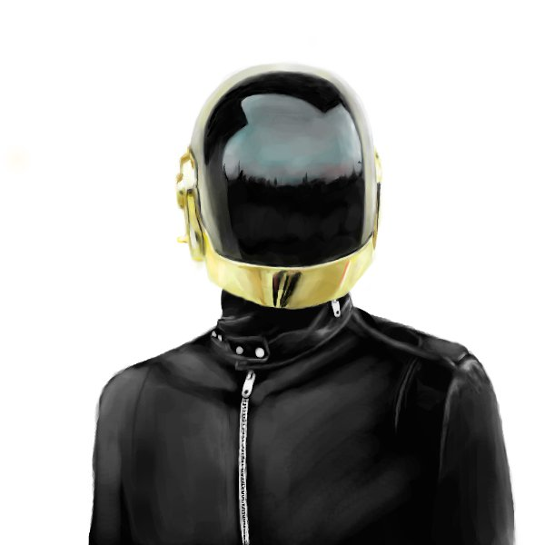

There is a misconception that people are only born with artistic skills and it can't be taught to a professional level. Like every other skill, practice will only make you better.
| 2010 | 2012 |
|---|---|
|  |
Those are drawings I did years apart which shows some improvement on colors and realism. I practiced for hours a week on coloring and accuracy just for the fun of it. It's always satisfying to see finished results.